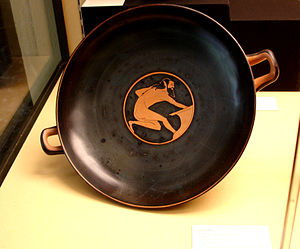
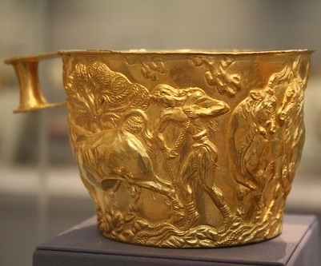
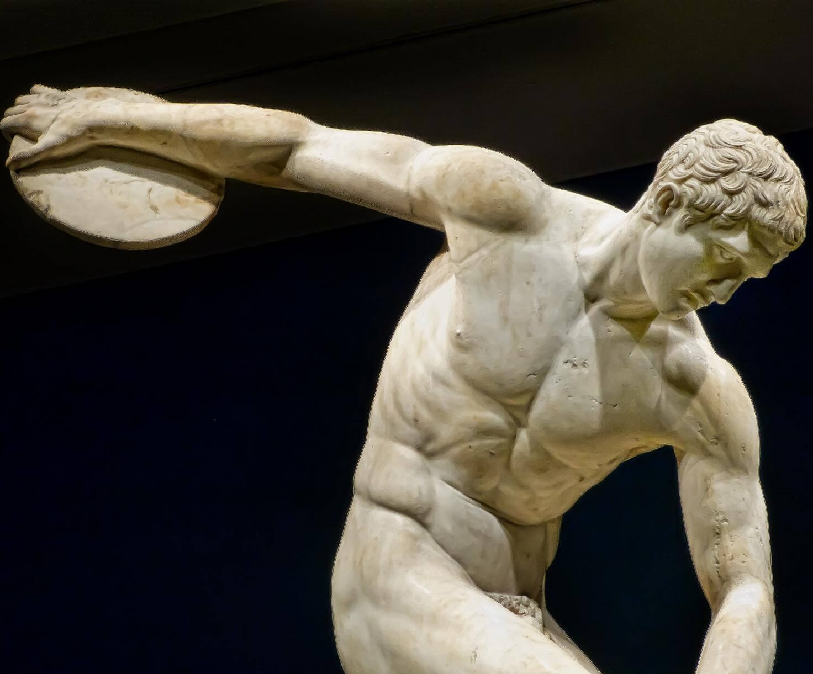
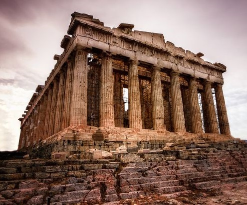

ARTA ȘI CULTURA GREACĂ

Arta din Grecia antică a exercitat o mare influență asupra culturilor multor țări, în special în domeniul sculpturii și arhitecturii. Ea poate fi împărțită din punct de vedere stilistic în patru categorii: geometrică, arhaică, clasică, si elenistică. Spre deosebire de alte popoare antice, grecii, prin arta lor magnifică, au glorificat umanitatea.
| 
Pictura grecească s-a păstrat până în zilele noastre doar pe vase care erau fabricate în cantități imense, cu scopul de a păstra vinul și uleiul pentru uz casnic sau pentru export. Scenele de pe vase reprezintă una din sursele principale de informare despre felul de viață grecesc. Acestea au apărut pentru prima dată (aproximativ 600 î.Hr.) în stilul ilustrării negre, prin care obiectele erau pictate cu siluete negre pe fundalul roșu, natural, al vasului. Detaliile interne (de exemplu, ochii pe o față complet neagră) trebuiau să fie scobite până la materialul roșu de bază. |

O influență de lungă durată a avut civilizația minoică din Creta. Frescele luminoase, decorative ale cretanilor, olăritul și podoabele metalice au fost adoptate și imitate de populații vorbitoare de limba greacă, care s-au așezat pe pământul grecesc, în aproximativ secolul al XX-lea î.Hr. În zilele noastre, această civilizație se numește miceniană, după un oraș din nordul Greciei, Micene, unde au fost descoperite măști de aur care acopereau fețele conducătorilor sau regilor morți. |
| 
După destrămarea societății miceniene, care a avut loc în secolul al XII-lea î.Hr., a urmat o lungă eră neagră de agitație și de emigrări în masă. Acestea au dat naștere unei societăți diferite (de cetate-stat) și unui tip de artă intens umanizată, pe care mare parte a oamenilor o asociază grecilor. Trăsătura ei distinctivă se datorează mult religiei grecești, care reprezenta zeii și zeițele drept ființe umane superdotate. Ca urmare, era normal ca arta greacă să se concentreze asupra figurii umane, fie că reprezenta un zeu umanizat, fie o ființă asemănătoare zeilor. |

Reliefurile clasice cele mai frumoase și sculpturile din fronton făceau parte din templul atenian Parthenos, mai bine cunoscut sub numele de Parthenon. Cele mai multe sculpturi aparțin colecției Elgin și se găsesc în British Museum din Londra, însă Parthenonul însuși supraviețuiește ca o ruină nobilă. Parthenonul este cel mai mare dintr-o serie de temple situate pe Acropolis (citadelă), în Atena. Toate aceste temple au fost înălțate în a doua jumătate a secolului V î.Hr. (culme a perioadei clasice) pentru a înlocui clădirile distruse din timpul războaielor medice. |